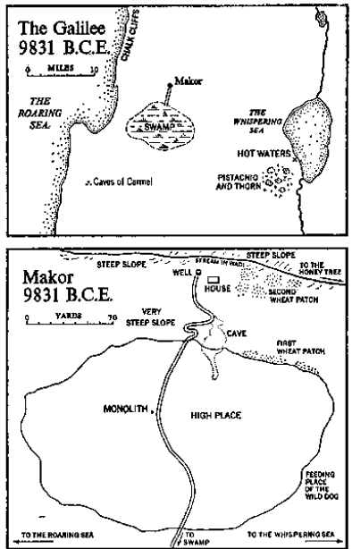

Flint sickle
Four from a set of five sharpened flints intended for fitting into a bone handle to form a sickle for reaping grain. The fifth flint was pointed on the end for use in the first position in the sickle. Original flint cores were found in limestone deposits at seaside cliffs in 9831 B.C.E. Shaped in that year and deposited at Makor during the summer of 9811 B.C.E.
There was a well and there was a rock. At the well men had been drinking sweet water since that first remote day, about a million years ago, when an apelike man had wandered up from Africa. The watering place had always been known in memory if not in speech as Makor, the source.
The rock was a huge, flat expanse of granite with a high place in the middle from which gentle slopes fell away on all sides. The rock was barren; it contained absolutely nothing, not even a carving or a pile of stones to mark some deity, for in those infinitely distant ages gods had not yet been called forth by the hunger of men. It was simply a rock, large enough to form in the future the foundation of a Canaanite town or the footing for a Crusaders’ fort.
The rock stood higher than the well, but halfway down the slope that separated it from the well appeared the entrance to a deep and commodious cave and one spring morning nearly twelve thousand years ago a husky, bandy-legged old man in a straggly beard and bearskin stood at the entrance to this cave in the twilight of his life and laughed with gaiety as children ran at him with roly-poly legs, leaping into his arms and squealing with animal joy. The old man embraced the children, even though they were not his own, and roughed them about when they tugged at his beard.
“Honey, honey!” they teased.
“You run away when bees fly past,” he chided, but when they repeated their pleadings he promised, “If I can find where the bees hide it I’ll bring you some.”
He left the cave and walked down to the well, an old man at ease with the forces that ruled his world. With his uncanny sense of land he knew the paths through the forest and the choice spots where fawn deer came to graze. His mind was still active and he could track the wild boar. He was as happy as a man could be, more productive than most in his generation, a hunter who loved animals and who consciously endeavored to bring pleasure to men. Anyone looking at his witty eyes and bandy legs experienced a sense of merriment.
Three years later, when all that he had attempted had prospered, when his old wife had found strange peace and understanding, when his son was well begun in life and his daughter happily pregnant, he would stand alone in a thicket of thorn and pistachio, trembling with a mighty terror that he could not even describe. It is with this man’s experiences in these three culminating years that the remembered history of Makor begins.
When he reached the well Ur bent down and splashed cool water onto his face. Taking a wooden cup which had been laboriously carved by flints, he drank the water and was about to put the cup aside when he saw his face looming up from the well. It was hairy, surrounded by a circle formed of hunched shoulders, small tight ears and drooping brow, but it was marked by two blue eyes that shone like little stars.
The light reflecting from his eyes fascinated Ur and he began to laugh, but as he did so a tiny pebble, scarce bigger than a bee’s wing, tumbled into the well and set up ripples which distorted the image of his face, and something in the way the water moved, taking his eyes and ears and mouth with it, frightened Ur and he drew back. But as quickly as the ripples had passed, the water restored his features to their proper place and he was once more Ur. He shivered to think that some unknown power could alter the essential he and smear it into a distorted form. Then he smiled at himself but he was not so free and happy as before.
Above his head he heard a soft whisper. It was surely a bee, and he dropped the wooden cup, staring here and there at the sky, and like the hunter he was he spotted the insect and saw its direction down the wadi in which, when rains accumulated, a muddy river roared briefly on its way to the sea. There were dead trees in the wadi where bees kept their homes, and Ur sprang to his feet, chasing after the insect, for if he could keep pace with it he might find his next cache of honey. With long-practiced eyes he followed the elusive bee until he was certain he had spotted the hidden tree. Motionless he sat on the ground, and after a while he saw where bees were flying in and out with whatever it was they stole from flowers to make their honey.
Ur’s lips began to drool. Slapping his face, to prepare it for the pain ahead, he pawed his powerful feet in the sand like an animal about to fight, and with a sudden rush he sprang at the dead tree, climbed far up its side before any bees detected him, and with strong hands began tearing away rotted portions of the trunk. The passionate sound of bees springing into action assured him that there was honey to be found, so before the bees could swarm to drive him from their treasure, he tore down into the heart of the tree until he felt the honeycomb.
Then the bees struck! Fifty, a hundred flew at his face, covered his hands, tried to find his soft parts. They stung him and died with their bodies distended. But his numb hands kept tearing at the comb, bringing out luscious chunks which he threw to the ground below. Finally, when he could scarcely see, he slid down from the tree, killing hundreds of bees as he fell. Only then did he start brushing the fiery creatures from his face, and when this was accomplished he took off the animal skin he was wearing and piled the chunks of honeycomb into it. Then, as quickly as his bandy legs would carry him, he ran from the wadi, smarting throughout his body with an exquisite pain.
When he reached the well his face had swelled like a mid-month moon and his eyes could hardly see, but a child from the cave spotted him coming and shouted, “Ur found honey!” And he was besieged by children, who led him up from the well to the cave, pointing at his distorted face and screaming with joy. With brave hands they touched his sack of honey and their mouths watered. But when Ur reached the safety of the cave and opened his sack to show the luscious hoard he had stolen from the bees, he found trapped in the honeycomb more than a dozen insects, and with his thick, hard fingers he picked them out and set them free.
“Make us more honey,” he told each one. “And do it in the same tree.”
The cave into which Ur retreated had only a narrow opening, perhaps twice the height of a man, but inside it developed into a dark, capacious room with space for many people. At the far end it narrowed into a tunnel which penetrated the earth beneath the rock, and in the ceiling there was a small opening which permitted smoke to escape, while from somewhere deep within the tunnel other fresh air entered, so that the cave was comfortable. In the center a smoldering fire was maintained, which women could feed with extra wood when a flame for cooking was required, and along the smoke-stained walls hung spears and clubs, animal skins drying for later use and baskets containing grain. It was a warm and comfortable refuge, a tight cocoon made of rock, and for more than two hundred thousand years it had provided shelter for the manlike creatures who had from time to time crept into it.
In Ur’s day six associated families lived there permanently, brothers of one group who had married sisters from another, strangers who had wandered in to marry extra daughters, all members of a common stock and all working together at the gathering of food and the maintenance of the community fire. The men were hunters, and they ranged far in search of animals, killing them with arrows and spears of high efficiency. They were no longer dumb brutes plodding after primordial beasts and stoning them to death; they were skilled huntsmen who took no unnecessary risks. Their women tanned the hides of the dead animals, making an excellent leather, and spent long hours garnering the wild grain that grew haphazardly in many fields. Holding a skin beneath the brown and ripened stalks, they would beat the heads with sticks and thus collect the precious grains which they ground in stone hand mills, making a flour that would keep throughout the winter. As for the children, they played upon the flat rock, tumbling and grunting like a pack of bear cubs delighted with the sun. And at night all gathered in the great cave, beside the flickering fire, as men recounted what they had done that day and women sewed.
When Ur appeared with his honey normal activity in the cave stopped and the inhabitants fell like a pack of animals upon the rare treasure, for honey was the only sweet the cave men knew, and for a few moments the smoke-stained room was filled with grunts and growls as each hand grabbed for its chance share of the sweet, waxy stuff. Children had a hard time getting their portion, but Ur helped them wedge their way among the elders, and their squeals of pleasure proved that their small hands were reaching the hoard. Two lesser hunters were absent trying to find deer, but no one thought to save them a share of the honey; and before long Ur’s bearskin was picked clean and people were spitting the wax into a bowl, where it would be melted down to treat the sinews used in sewing. And now that the honey was gone Ur could sit on a large stone while his wife put cold water on his puffed face and combed dead bees from his beard.
The Family of Ur formed a closer group than some. It was led by the bandy-legged old man who, having lived for thirty-two seasons, was now approaching the time when he must die. His elderly wife had survived thirty; she looked after the children, a son whose distaste for hunting worried Ur, and a lively daughter who, having lived through eleven seasons, was almost old enough to have a man for herself, except that she favored none in the cave and no stranger had yet come by in search of her. It was her mother’s hope that when one did, he would want to live with the family and in time take Ur’s place.
Old Ur was a man whom the cave people respected. He was five feet, four inches tall and weighed about a hundred and seventy pounds, a stocky figure with the huge shoulders that characterized his species. Above his beard gleamed his bright blue eyes and the ruddy cheeks that liked to wrinkle upward in a grin. He laughed a lot, and now that his own children were grown, played with the offspring of his neighbors as the little round ones scrambled across the rock in sunlight. Unlike the brutish creatures who had originally wandered to the well from Africa, Ur walked erect, lacked heavy bones over his eyes, and had a smooth skin that produced no great amount of body hair. He had acquired full dexterity in the use of his relatively small hands, although he never understood why his right hand remained more agile than his left and did most of the work and all of the throwing. His skin had a peculiarity which surprised him: under his bearskin it remained a pinkish white, but where the sun touched, the coloring became dark brown, so that from a distance Ur and his partners looked like black men. In the last forty thousand years his throat, his tongue and lower jaw had been much modulated and were now flexible instruments adapted to the articulation of language; he had a vocabulary of more than six hundred words, some of which comprised three syllables and a few four or five. Every hundred years or so new experiences would accumulate, requiring the invention of new words; but this was a slow process, for Ur and his neighbors were extremely cautious and the utterance of a new word might upset the balance of nature and call into being strange forces that were better left at rest, so words tended to be restricted to the same sounds that time had made familiar. There was one other use to which the flexible voice of man could now be put, although not many used it in this capacity: men could sing —their women in particular—and sometimes in the early morning Ur would hear his wife and daughter making pleasant noises, using no words or made-up ones like “traaaaaaaa” or “sehhhhhhhhh.”
That night, when the two hunters returned with no deer and the fires were banked, when the roly-poly children slept like bear cubs and a cool breeze issued from the tunnel, the community sat in shadows as Ur with his puffed eyes explained how he had found the honey: “From the well Makor, from the depths of the water a single bee rose and called to me, ‘Follow, follow!’ I ran through the wadi till the sun was tired. Over rocks and trees where the deer feed and where the wild boar comes at night I ran. You would have fallen with cracked lungs, but I ran on, for the bee kept calling, ‘Follow, follow!’ And so I came to the hidden tree, which all have searched for but none found.” He told how he had climbed the dead trunk and, fearless of the attacking bees, had torn into the heart of their treasure, and as he spoke of the sweet burden that had filled his bearskin he threw back his head and cried in the ecstasy of the hunter who shares the spirit of the animals he tracks: “Burning with pain, I brought the honey home. My eyes closed with pain, I followed the voice. For the bee flew before me singing, ‘Ur found our honey. Ur, the great hunter, was not afraid. I will lead him home, back to his cave. Back to the well I will lead the brave hunter.’”
No sound came from the cave except the quiet sleeping of the children, and all could hear the voice of the bee leading the hunter home.
Ur would probably have lived out his life hunting animals and bees and telling about it at the fire if he had married an ordinary woman, but his wife did not come from the cave. Years ago, when Ur was just beginning to run with the hunters, his father had led an expedition into lands east of the Whispering Sea and had there come upon a strange people with whom he had naturally engaged in battle. The cave men were triumphant, but after the slaughter they found that one twelve-year-old girl was living and Ur’s father had brought her home.
She knew nothing of caves; the dark interior frightened her and she supposed when she was dragged inside, that it was to her death. Later, when she learned to speak the language of the cave, she explained to Ur that in her land families did not live underground; but he could not imagine how they did live, for her explanation of how men could use stones and walls of wood to build their own caves above the ground made no sense to him. “It’s a better way to live,” she assured him, but he could not understand.
Nor did he understand, when this strange girl became his wife, her preoccupation with gathering wild grain; but she knew that unlike raw meat it could be stored throughout the winter, and she would wander considerable distances to find the best stands of cereal. One day in an open field east of the great rock she found an accidental accumulation of wild grain, and she brought Ur to the spot, showing him how much easier it was to reap a concentration of stalks instead of searching far and wide, and she asked her husband, “Why don’t we make the grain grow where we can watch it? For if we do, when autumn comes it will ripen in fields that we remember.” Ur, knowing that if the wild grain had wanted to grow at man’s command it would have done so, ridiculed his wife and refused to help her dig out the grass and move it closer to the well. His wife, bending over the stalks, looked up and said, “My father made the grain grow where he wanted it to grow,” but Ur rejected the concept: “He also built caves on top of the ground.” And with amused tolerance he went off to hunt.
Nevertheless, for the first fifteen years of their married life, Ur’s wife went out of the cave in all seasons trying fruitlessly to tame the wild wheat, but each year it was killed either by drought or flood or too much winter or by wild boars rampaging through the field and rooting up all things with their tusks; and it seemed evident to Ur that the wild grass did not intend to grow where his stubborn woman dictated. In the meantime, the other families who shared the cave went about their business of tracking down the wild wheat where it chanced to grow; and they ate well. But two years ago Ur’s wife had found along the far banks of the wadi some young shoots of a vigorous emmer wheat and these she chanced to place in proper soil along one edge of the great sloping rock, so that throughout the dry season enough moisture drained off the rock to keep the grain alive; and although its yield in edible wheat was disappointing, the grain lived as she had directed, and in the spring it reappeared where it was wanted. Ur’s wife told her family, “We’ll see if we can make the wheat grow along the edges of the rock, because I think that in those places the soil helps us.” And as the determined woman had foreseen, here her wild grain prospered.
When her daughter had reached her eleventh year, Ur’s wife satisfied herself that she could make the emmer wheat grow where she wished and she felt it necessary to reopen another problem which she had been pondering for some time, hesitant about discussing it with her husband. Now, without warning, she told him, “We ought to leave the cave and live by the well. There we can watch our grain.” The bandy-legged hunter looked at her as if she were a child trying to steal his honey.
“Men should live together,” he said. “Around the fire at night. Telling stories when the hunt has ended.”
“Why are you always so sure that your way is better?” she asked, and Ur was about to mock the question when he saw her lively face. She was a delicate woman with long black hair and whenever Ur looked at her small, determined chin he could remember the joy he had known with her when they used to lie in moonlight on the rock, staring upward at the stars. As a wife she had been hard-working and as a mother, tender and responsive. But she had always possessed strong ideas —it had taken Ur’s father a hard fight to kill her family—so he did not laugh when she repeated her question, “Why is your way better?”
“Where would we live… if we did leave the cave?” he asked defensively.
“In a house,” she said. “With its own roof and walls.”
“The first storm would blow it down,” he predicted.
“Storms didn’t blow down my father’s house.”
“You don’t have storms over there the way we have over here,” he said, and that ended the discussion. He was therefore surprised some mornings later, as he was leading his hunters forth to track gray deer, to see his wife and son working at the flat area near the well.
“What are you doing with those rocks?” he asked.
“Building a house,” his wife replied, and he saw that she had laid out a circle of rocks some fourteen feet across. Shrugging his shoulders at her obstinacy, he went off to the swamp with his hunters, but at dusk when he returned to the cave he could see at the well a substantial pile of rocks and the beginnings of a solid structure. Four days later he came back from a hunting trip to find his son erecting upon the wall of rocks a palisade of tree trunks cut from the wadi.
“Now what are you doing?” Ur asked.
And his son replied, with words that put him into formal opposition to his father, “If the trees give us walls, we should use them.” And Ur saw that his wife was bringing rushes from the wadi and reeds to be woven into a tightly matted roof, under which the family would find protection from the sun. And what he saw Ur did not like.
At nightfall he led his family back to the cave, where he recounted in vivid phrases the story of his hunt, but he ended the narration much sooner than usual, for he was worried about what his wife and son were doing. He loved this cave, so cool and convenient to the well. It bred lice, to be sure, and it smelled, but the fire was warm and the companionship a thing to be cherished. For the past seventy thousand years the cave had been continuously occupied by Ur’s ancestors, one generation after the other, leaving behind them brief mementos of their short and ugly lives. Ur could remember as a boy, in that far corner over there, finding a long-forgotten skeleton encased in hard rock which had formed when rainwater seeped down over the limestone, and later, back in the narrow part of the tunnel, he had come upon a hand axe, adroitly chipped from a core of flint by some brutish, stooped figure more than two hundred thousand years ago. On fleeting occasions in his life Ur had caught the inner spirit of the cave, that closed community which embraced its members and excluded all others. The cave lent strength to those who lived within it and the preposterous idea of his wife and son, to build a separate house for one small family by the well, was instinctively repugnant to him. Men should live together, smelling each other and bringing honey home to all.
He especially liked the moment when a dozen men surged out of the cave bent on hunting, twelve men guided by a single will, and that will most often his. He could remember how, as a boy, he had surprised the older hunters with his unusual feeling for the land and his ability to predict where animals would take cover. “Come along and show us where the lion is hiding,” they had often called, and he had led them westward as far as the Roaring Sea, clinging to the lion’s spoor until he could point to a thicket, saying, “He’s in there.” In the opposite direction he had scouted paths leading to the Whispering Sea and had taken his men along these paths in search of deer, who grew panicky when Ur and his team followed their trail, smelling them out with a canniness that was frightening. It was no uncommon thing, when the men of Ur’s cave spotted the track of a lion, for them to maintain the chase for three days or even four, driving the beast at last to cover where they could assault him with their spears and arrows.
But the finest part of any hunt came when they struck the spoor of a wild boar and tracked it to the vast wilderness south of the wadi, for then the cave men were required to plunge into the mysterious swampy area where sharp-thorned vines clutched at them and sucking mud tried to grasp their ankles. For several days the team of hunters would move cautiously through the swamps, marking their way as they went, until at last, in moments of blazing excitement, they would rout out the monstrous beast, the wild boar weighing as much as six hundred pounds, with flashing tusks and cruel visage, and they would harry it to death, minding always those scimitar-like weapons which could cut down a man or impale him and send him shrieking into the air. For men like Ur the final moments of a boar hunt were the ultimate experience, and he was proud that in the middle years of his life, from twenty to twenty-four, he had often served as captain of his hunters, directing them to move thus and so in the last stages of the fight.
But now, as the house by the well grew to completion, Ur became aware that when it was finished he would be expected to move from the cave and live in the separated house, subject to storms and loneliness and wind. It was not a commodious house his wife and son were building, nor was it completely rainproof. It was susceptible to fire, and winds easily penetrated the walls; but it had enormous advantages over a cave: it was better ventilated and was therefore healthful; it could be moved or added to as occasion necessitated; and it could be placed so that its owner might watch his fields and stay close to his well. But the greatest advantage came in an area which the old man could not have foreseen: In the cave Ur’s ancestors had lived much like animals. They had been forced to live where the cave was and within the space it provided; they were its prisoners both in acting and thinking, and in their older years they were apt to be killed or starved to death because younger families required the cave. But with the building of the self-contained house Ur would become the master and the house would be his servant. He would be forced to engage in new ways of thinking, whether he wanted to or not.
When the house was finished Ur reluctantly assembled his family in the cave, where many were inclined to laugh at him for his fatuous venture but refrained from doing so because of his reputation as a hunter. He grabbed his four spears, his two animal skins, a bowl and a stone hammer and started for the narrow exit, but sensing that this was his farewell to a way of life, he stopped to look once more at the grimy walls that had protected him from birth, and on the opposite side of the cave he could see the dark tunnel reaching far back into darkness. Turning his face toward the light, he passed through the exit and moved rapidly down the path to the well. There he threw his spears against the wall and sat for a long time looking at the clean white trunks of the trees that formed the wall. To him they looked most alien and uninviting.
The family had not been in the house long when Ur’s son discovered that the springtime planting of wheat need not be left to the chance scatter of autumn grains. By holding back some of the harvest and keeping it dry in a pouch of deerskin, the grains could be planted purposefully in the spring and the wheat could be made to grow exactly where and when it was needed, and with this discovery the Family of Ur moved close to the beginnings of a self-sufficient society. They did not know it, but if a food supply could be insured, the speed of change would be unbelievable: within a few thousand years cities would be feasible and civilizations too. Men would be able to plan ahead and allocate specialized jobs to each other. They would find it profitable to construct roads to speed the movement of food and to devise a money system for convenient payments. The whole intricate structure of an interlocking society became practical the moment Ur’s son mastered his wild grains.
It was Ur’s wife who first appreciated the change immanent in her son’s discovery. It was an autumn day, a glowing time of gold and falling leaves, and she stood on the rock watching her husband return from the swamps, helping to lug a great boar to the rock where it would be divided, and she heard the chanting of the men: “Ur led us to the swamps where the soft sand bites.
He took us to the darkness where birds hide. Ur caught the gleaming eyes of the boar in darkness. It was he who shouted, ‘Now! Now!’”
It was a pleasing chant, gratifying to the wife whose husband it memorialized, but as she watched the hunters approach the rock she saw them outlined for a moment against the ripened wheat and realized for the first time that in the future, men like Ur would not go venturing into the swamp like excited boys but would stay closer to home, guarding the wheat; and a sense of sadness possessed her, so that she wanted to leave the triumphant men and weep for their lost simplicity. She saw their whole way of life modified by the taming of a thin stalk of wild grass. She saw them leaving the oak forests where the deer roamed, and going no more to the dark swamp where the wild boars hid. She had loved her brave young mate in the days when he led the hunters, and she felt for him the pain which he had not yet discovered for himself.
And barely had she recognized this change than she became aware of an even more disturbing problem evoked by the grain, one too powerful for her to formulate in words. As her development of the wild wheat had proved, she was both courageous and perceptive and now she began to wonder about the unseen forces that influence men, and just as she had been quick to sense the impact of cultivation upon men like Ur, so she was the first to perceive, no matter how incompletely, its relation to forces greater even than the hunters.
Through ten thousand centuries the animal-like people living near this well had worked out a plodding but viable relationship with the forces that surrounded them. Throughout the alternating ages of ice and great heat they had learned to live with these forces. They did not understand them, nor their interrelationships; they did not even give them names, but they knew them intimately as the source of supreme power. The proper balance between life and death had been painfully ascertained and all were anxious that it not be disturbed. At night, when towering storms thundered over the Carmel mountains to the south, it was apparent that the spirit of the storm was angry with man and wished to destroy him. How else could one explain the blinding flash of lightning that tore a tree in half and set fire to forests? How else describe to a neighbor the unexpected cloudburst that struck the wadi, washing away all things before it? How otherwise could an immovable boulder, many times larger than a man, suddenly run with the flood and strike that man? Obviously the spirit of storm was angered by something men had done and was personally seeking revenge.
The same behavior could be noticed regarding water. Sometimes it loved men and served them with life; at other times it grew angry and stayed away until men nearly perished. Even the water in the well behaved this way, retreating in petulance deep to some unknown cave until men came close to dying, then surging back with joy and kisses for the gasping children. The air, the spirit of death, the burning wind from the south, the spirit that opened the body of a woman so that new men could be born, the tree that gave fruit or withheld it— everything of importance in nature had a will of its own that operated either in favor of man or against him.
No ritual had yet been established for placating these conflicting forces. In those years no precious children were sacrificed to the god of the storm in order to win his favor, nor was the hideous wild boar given human blood in order to assuage his enmity. There were no altars to the rain, nor temples to the god of day who regularly conquered night. Men had not yet discovered that the forces of the world could be propitiated by conscious acts of subservience; many times in the preceding two hundred thousand years the cave had been deserted when food supplies in the region diminished, but when the animals returned the apelike men came back too. They were attentive to the commands of nature, and they watched for omens, but they were not slaves either to the spirit of the storm or to its warning omens. It was known that the wild boar was malevolent, both in appearance and conduct, but it had not yet been discovered that this malevolence could be counteracted by some conscious act of man. In other words, the embryonic beginnings of religion had not yet been conceived. The closest approach, perhaps, to a ritualized behavior came at the moment of death, when it was acknowledged that the dead man would require some food and protection in the unknown days ahead. He was therefore buried in a specified position, his head on a pillow of rock, accompanied by a few pots of food, a spear and some ornament he had loved, perhaps a carved shell or a necklace of beads.
Up to now the attitude of Ur’s wife toward these matters had been clear-cut: the storm had a living spirit, as did water and wind and sky and each tree and every animal. Ur’s wife was constantly aware of these spirits and she treated them with awe. Had she ever seen the spirits openly? She thought so: once when lightning struck close and she heard an extraordinary voice speaking in a hiss of sulphur. Prayer had not yet been invented, but she spoke confidently to that voice and it did not harm her. The great rock had a spirit, broad and generous, as did the fish in rivers, the flint that threw sparks, and the swamp and the trees therein. What her relation to these myriad spirits was she did not rightly know, but as a rough rule she said, “They must not be offended.” Therefore she did not boast about having survived the storm, and told no one of her conversation with the spirit of lightning. She did not throw stones at animals or waste water, and when Ur’s father died she buried him with her best carved bowls, Ur’s good spear and a small string of stone beads.
But with the advent of cultivated wheat, the balance of nature was disturbed and she knew it. Before the first season ended it was obvious that success in planting depended upon sufficient rain and the faithful performance of the sun —not so much heat as to wither the young plants but enough to ripen the maturing heads—and she began to watch with apprehension any shift in the attitude of either the spirit of water or the spirit of sun. In the second and third seasons, when the area planted was considerable, she became actually terrified when rains were postponed, and she began speculating on what tangible thing she might do to encourage the spirit of rain to send the coveted water. Finally she cried to the open sky, “May the rain come!” and she begged for mercy; but even in doing so she assumed the I-It relationship which had always been maintained in the cave, for she conceived of the rain as an impersonal spirit, powerful but inanimate.
When she spoke of these growing fears to Ur, he laughed at her apprehension and said, “If a man tracks the wild boar right, he finds him. If he fights him right, he wins.”
“Is it the same with grain?” she asked.
“Plant it right. Guard it from your new house, and it will bring food,” he promised her. But even as he spoke he remembered the day at the well when his image had been moved about and altered by some unknown force, and in this moment of recollection his new life began. His arrogance faded, and when his wife left him he wondered if killing a wild boar was as simple a thing as he had said. Once or twice in the past he had suspected that his hunters would not of themselves be able to subdue the formidable beast; there must be some mysterious force of nature assisting them, as if it too were afraid and allied itself with man to conquer the ugly beast. But the men from the cave called, “We’re ready,” and he left his fields to lead them toward the dark swamp.
So his wife turned with her questions to her son, and before she had finished formulating the problem she found that he had anticipated her. Sitting on a rock beside the grain field, the boy watched the hunters depart, then shared with his mother certain speculations that had troubled him: “In the wadi we have many birds. The black-headed birds that sing in the evening, and those beautiful things with long bills and blue wings that nest in river banks to catch fish. And the crested larks walking about the field out there, searching for grains. And that swift bird, faster than all the rest…” He hesitated. “The one that eats bees.” He pointed to where a bird somewhat larger than his hand, with long sharp beak, blue body and a profusion of bright colors on its wings and head, darted in and out among the trees. It was a magnificent bird, swooping in lovely arches through the sky, but what concerned Ur’s son was not its beauty. “See! He catches a bee in mid-flight. He takes it to a dead branch. And there he eats it. But watch! He spits out the wings. And this he does all day.”
Now the Family of Ur knew, better than most, that bees were an asset to the wadi, and one of the boy’s first memories was of his father coming home, near-blinded with stings, swearing and slapping at his beard, with a hoard of honey which the children of the cave had fought for. The flowers of the area were so diverse in flavor that honey from four different combs might taste like four quite different things. For their sting, bees were respected; but for their song and their honey, they were loved. And to think that a bird as alluring as the bee eater existed solely to feed upon bees raised in the boy’s mind a whole new range of questions: How could two things, each so excellent, be in such mortal conflict? How could two desirable aspects of nature be so incompatible?
He asked his mother, “If a bee does so much good in the wadi and is tormented by an enemy as fatal as the bird…” He followed the flight of the dazzling predator and watched as it swooped down upon a bee returning from the flowers and then spit out the wings. It was an ugly incident and he said, “Is it possible that we also have enemies somewhere in the sky, waiting to pounce on us?” Again he paused, and then put into exact words the problem that had begun to torment his mother: “Suppose the rain has a spirit of its own? Or the sun? What then with our wheat?”
A second aspect of nature led the boy to an even more difficult question. The cypress, that tall and stately tree which marched along the edges of open fields serving as a dark pointer to the sky, was a splendid tree in whose narrow body birds loved to nest, and it produced each season a crop of small cones about the size of a thumb-tip, remarkable for the fact that each contained nine faces cleverly fitted together to hide the seeds inside. There were never eight faces and never ten, but always nine, ingeniously matched in a manner that could not have happened by accident. Some spirit within the cypress had consciously willed its cone to appear as it did, and if this were true of the tree, why was it not also true of the field in which wheat grew? And of the wheat itself?
The boy sat with his mother in the sunlight pondering these matters when a bee eater flew past, creating brilliance in the sky, then disappearing among the cypress trees which stood like warning sentinels. A tantalizing thought played across the boy’s mind, a thought not easy to formulate but one that he could not throw aside. A trio of crested larks marched past, pecking for fallen grains, and after they disappeared he stared at the cypresses and asked, “Suppose the spirit that forms the beautiful cone is not within the cypress? Suppose the rain comes or stays away not because of what the rain wants to do…” His thoughts were leading him into areas too vague and shadowy for him to explore, and for the moment he dropped the matter, but the fear he had aroused would not go away.
It would not be correct to say that with the discovery of cultivated wheat fear was also discovered, for ordinary fear the Family of Ur had long known. When Ur came upon a cornered boar or a lion from the north he knew fear. And when a woman in the cave was about to give birth Ur’s wife knew fear, for she had seen women die at such moments. And one mournful night when Ur had lost a hunter in the swamps, killed by a boar, his daughter had heard the messenger’s cry from afar, “He is dead!” and she had thought it was Ur himself. Even she knew fear. But the fear which the family was now discovering was of another kind: it sprang from the slow-maturing apprehension regarding the relationship of man to his world, the gnawing suspicion that perhaps things were not so simple as they seemed on this average autumn day when ripening grain hid in the stalks and a rumor of deer echoed in the forest. Again and again the glorious bee eater flashed through the wadi, driving the mother and son to wonder whether it had been dispatched by some outside power as an exquisite messenger to warn men that the same force which endangered the bees was ready to swoop down on fields and houses.
And then one morning, as the grain approached its harvesting, Ur cried suddenly, “That’s it!”
“What?” his wife asked, looking at him suspiciously.
“We’ve been trapped into putting all our energy into wheat.”
“What do you mean, trapped?” she asked, caught by an ugly suspicion that Ur had discovered her own source of fear.
“When we have all the grain in one place, it can easily be destroyed.”
“You mean the sun? The fire?”
“Those, or the wild boar rooting up the fields.”
She looked at her husband with unashamed fear, for Ur was an authority, a sensible hunter and a man whom others respected. Therefore he must be listened to. What was more, he had dared to express in words the growing fear that she and her son had experienced, for it was a rule of life that the Family of Ur was discovering: the more committed a family becomes to a given project, the more vulnerable it also becomes. Having partially conquered nature, they were now a prey to it. “What can we do?” she asked quietly.
Ur’s son was at this moment watching the iridescent bee catcher dart among the cypresses for his prey, and he observed, “If we knew some way to make the rain and sun appreciate our problem.” But the family could think of no way to accomplish this, and late that afternoon they discovered that their enemy might lie in other directions than the ones they feared, for a towering storm brewed over the Carmel and moved north accompanied by flashes of lightning and the roar of thunder. Drops of rain fell in the dust and splattered like broken bowls of broth across the flat rock. Others followed, and soon a slanting wall of water was dropping from the sky, filling the wadi and sending a yellow flood swirling among the trees.
“It’s reaching for the house!” Ur shouted, and he saw that if the deluge continued, his wife’s fields must be swept away.
“The storm fights us for having stolen the wild wheat,” his wife wailed as the turbulent flood sent its fingers into her fields.
Ur was no more willing to surrender to the flood than he would have been to flee a lion. Running to the house he grabbed his best spear and with it rushed to the edge of the wadi, a bandy-legged old man ready to fight the elements. “Go back!” he roared at the raging storm, not knowing exactly where to throw his spear. Always before, when floods came, he had retired to the cave to wait out their subsidence, but now that his home was in the middle of the storm he was involved and there was no retreat, no refuge. “Go back!” he roared again.
But his son saw that if the rain stopped falling in time, say, within the next few moments, he might by building a dike hold back the wadi and prevent it from washing away the fields. Accordingly, he began running about placing rocks and sticks and mud along the lower portions of his land, diverting the water. Summoning his family he showed them what to do. And when Ur finally saw what might be accomplished, he laid aside his spear, stopped bellowing and speeded the construction of the dike. The girl called others from the cave, and as the thunder crashed about the trees above them, all worked to build a wall to hold back the muddy water, and it was obvious that the fields would be saved if only the storm would halt.
In these critical moments, when the fall of rain was greatest, obscuring even the mouth of the cave, Ur saw his wife standing in the storm, her tired face uplifted, crying, “Storm, go back! Go back and leave our fields!” And whether the spirit of the storm heard or not, no one could later say, but it abated and the waters receded.
When the storm was gone Ur sat bewildered on a rock, marveling at how close the flood had come to destroying his home and at his son’s dexterity in building the dike. Then, out of the corner of his eye, he saw his wife doing a most perplexing thing. “Wife,” he shouted, “what are you doing?” And as she threw handfuls of wheat into the swirling waters she explained in a low voice, “If the storm has left us our wheat, the least we can do is offer him some in thanks.”
It was an epochal event, this utterance of the word him. For the first time a human being at the well of Makor had spoken of an immanent spirit as “he,” a personified being who could be approached directly on a woman-to-deity basis. This was the inchoate beginning of the concept that a human-like deity could be propitiated and argued with on a personal basis. Throwing her arms wide she tossed her last grains on the water and cried, “We are thankful you went away,” and the storm sighed as it roamed overhead, whispering to her in reply. This was the first fumbling effort to evoke the I-You relationship—“I am begging You, my partner, for mercy”—under which society would henceforth live, until the multitude of gods would become more real than sentient human beings.
When Ur saw how the planned fields could be protected from floods, and how they could be depended upon to provide an abundance of grain for all, he was gradually lured away from hunting, as his wife had foreseen he must be. He began to speak of “my fields” and of “my house,” and his feelings toward each were different from those he had entertained about the cave. That reassuring hole beneath the great rock had not been owned by him nor by anybody; no one had built it nor improved it; he merely shared a portion of it for as long as he could bring in more food than he ate. With the new house it was different. It was his house, not his brothers’ who lived in the cave. The fields were his, too, for he had cleared them. And at the height of the storm he had been ready to fight the wadi and the sky to retain them. In his new apotheosis as owner Ur began to bring new fields into cultivation, but the word fields could be misleading. For Ur a field was an area no larger than a table, at its maximum as large as several tables placed together.
Men of the Family of Ur had always possessed an intuitive sense of the land, and now it was the reluctant farmer who discovered one of the essential mysteries of earth on which all subsequent agriculture would depend: he found that if he continued to plant his wheat in one field near the edge of the sloping rock it would grow better because the grains would be assured drainage from the rock, but soon the earth would tire of nurturing the seed and after a time would halt maliciously and send forth only sickly wheat; but if he planted his grains in some spot lower down on the sides of the wadi, where the rain was free to wash down, bringing with it each year bits of new earth to add to the old, the soil would be replenished and such a field could be used season after season. So in an age when fertilizer was unknown Ur had stumbled upon the flooding-principle that would later operate along the Nile and the Euphrates: allow the rivers to overflow and bring fresh soil to rebuild the old. Ur could not formulate this theory in words, but his inherited sense of earth assured him that somehow the soil was pleased with this replenishment, so he hacked out his little fields, keeping to the lower levels where fresh silt could filter down cycle after cycle. Fortified with this secret of how to keep his land fertile, Ur was tied ever more strongly to that land.
As Ur was thus tricked into neglecting hunting in favor of tending fields, he experienced a vague displeasure over the fact that his son showed no desire to take his place in the woods. “A boy like you ought to know how to kill a lion,” Ur said sharply one day. “Otherwise how can you expect to find a woman?” Once or twice, lately, Ur had suspected that his son might lack courage, for the boy inclined toward working the fields or chipping flints into new patterns. Yet Ur did remember that at the height of the storm it had been the boy who had fought the flood, and the old man admitted grudgingly, “He’s neither stupid nor lazy.”
Ur did not know it, but his malaise stemmed not from any disappointment in his son, but from the crushing impact of a new way of life that seemed to bear down on him alone: he was a hunter required to tend grain, a man instinctively of the cave forced to live in a house; he was a man who had developed a pragmatic adjustment to nature but who was now being lured into the first steps toward polytheism; but most of all he was a man who had been a happy, indistinct member of a group living in a cave, and now he was asked to be Ur, one man standing by himself, who knew how to track lions in an age when lions were beginning to move inland.
One morning, in the third year of this metamorphosis, he burst out of his new house as if the atmosphere were crushing down on him. He ran up the path, past the entrance to the cave and on up to the great rock, where he went to the highest point and stood breathing rapidly as if it was air he needed. When his lungs were full and he found that he had gained no relief, he sat down in a kind of terror. “What’s happening?” he asked, and in this moment when the possibility of death first became a reality he happened to see his daughter working in the fields, and he began to find in her the solace he did not find in his son.
At fourteen she was an attractive woman with long brown legs and a graceful neck which she adorned with jewelry made of shells and stone beads. She was ripe for motherhood and the responsibilities of a home, but she also retained the lively interests of her childhood and thus occupied a hesitant, uncertain place by the well. As a near-adult she worked with her mother, learning what she could of tanning leather and sewing, and like her family was in close contact with the manifestations of nature. She, too, felt that there must be ways to appease the unseen spirits. Ur, watching her, felt pride in her attainments and knew her to be the kind of woman who would make a round hut a warm and pleasant place, while her vital body promised many children. But it was primarily as a child that the girl impressed her elders most.
In one of the trees near the well a family of singing birds had its nest, and the Family of Ur used to take much pleasure in watching the parent birds hustling back and forth to feed their young. The adults had black heads, gray bodies and a smart dash of yellow under the tail, so that they were easy to see as they foraged for insects along the edges of the wheat fields. They sang beautifully and were charming birds to have at one’s door, except that when their four babies were partly grown they detected that one had a defective leg, and in the manner of birds they put their two bills under the weakling and with an upward toss threw him from the nest. He half flew, half fell to the ground, where he would shortly have died had not Ur’s daughter seen him fall and run to rescue him. In the following weeks she nursed the foundling to health, and although he continued to have one weak leg he became a robust little creature, hopping about the well and across the large flat rock where the girl sometimes lay watching the sky. In time he began to sing and would often fly far to catch insects, but always he came back to the round hut, perching on the shoulder of his mistress, biting at her beads and chirping in her ear. Ur was pleased with the bird, for he properly sensed that it had been sent as some kind of assurance that the birds of the forest were not angry with the people at the well for having left the cave to start a new form of life; and the girl loved the delightful bird as the last symbol of her childhood and a premonition of the more serious years ahead. Once as Ur watched the two and saw the warm affection the bird had for his daughter, hopping after her on his one good leg and using the other as a balance, he threw his arms about the girl and cried for no apparent reason, “Soon you’ll have real babies of your own. I’ll find a man.” Shortly after he said this a flight of the black-headed birds came up the wadi, and among them was a female, dark and lively, and never again did the Family of Ur see their friend.
At the far end of the wadi there lived a family of wild dogs—pariah dogs they would be called later—smaller than hyenas but larger than coyotes, and they lived by killing weakened deer or foraging at the edges of human settlements. They were powerful animals, real beasts of the forest, and occasionally an old man left aside to die would be attacked by them. When they first surged at the useless man he might think they were wolves come down from the north, but if he were brave he could drive them off and live a little longer, for they were not wolves, nor even of that breed. They were dogs; and although in their wild state they did not know it, they were capable of great friendship for the men they fought; and the men, equally blind, could not foresee that they required the dogs in order to initiate any kind of herding process, for without intelligent dogs no man could keep his more stupid animals like cows and goats under control. But all this was thousands of years in the future; for the present the two creatures—man and dog-shared the same wadi without anticipating the rewarding partnership that lay in store for them.
It was the daughter of Ur, hungry over the loss of her singing bird, inchoately hungry for the babies she had not yet had, who first noticed the great dog, largest of his pack, who volunteered to come away from the depths of the wadi and to approach the plantation in search of scraps. When Ur shied a rock at him he snarled and withdrew like the other dogs, but he did not stay away. And then one day as Ur’s daughter lay on the high place of the rock looking at the flying clouds, she became aware that the large dog was watching her, unprotected by any tree but simply standing at the far edge of the rock. The two were about a hundred yards apart, each staring at the other, when Ur, working below, looked up to see the wild animal menacing his child, and he threw a well-aimed rock which struck the beast in the right flank and drove it howling into the woods. Ur scrambled up the side of the wadi and ran to rescue his daughter. “Are you hurt?” he shouted, but when he came to her side she was crying.
It was some days before the large dog ventured back to the rock, but when he did so he found waiting for him a chunk of boar meat, which he ate cautiously, keeping his eye on the girl. Gnawing at the bone to which the meat was attached, he watched the girl for some minutes, then retreated quietly into the woods. That night the girl told her father that he must never again throw stones at the dog, because she intended feeding him regularly at the edge of the rock; and after she had done so for some months, moving always closer to the spot where he ate, he allowed her to sit less than forty feet from where he took the meat, and she could see his powerful jaws. She could also see the dancing lights in his eyes and the manner in which he held his tail when he assumed that she would not attack him, and she was tempted to move closer and perhaps to touch him, but whenever she showed an inclination to do so, the dog moved cautiously away. In these tentative years of introduction, forty feet was the minimum distance of safety between dog and man, and so long as this was maintained, the girl and the wild dog cultivated their friendship. That the relationship was significant to the dog, even when the girl failed to feed him, was proved one morning when, during the time that the girl sat watching the animal, she was called back down to the well. As she left abruptly, the dog seemed disappointed that she was leaving and followed her, at his distance of forty feet, until she reached the house. He then sat for a long time waiting for her to reappear. As soon as he was satisfied that she was there he left the unfamiliar terrain and ran back to the woods.
Perhaps Ur’s daughter could in time have diminished the distance between the two, for she was patient and the dog was inquisitive, but one day as she worked in the wheat fields, unmindful of the beast yet aware that he was watching her, she heard a human voice utter a cry of victory which was drowned by the piercing wail of a dog, and she dashed with passion to the rock to find that her animal—her proud, wild dog of the forest—had been slain by a spear which had passed through the chest. The dog lay inert, his brown eyes still open in sad surprise, but at the far edge of the rock stood a tall young man shouting exultantly, “I’ve killed the wild dog!” And she leaped at him with an anguish which only the bereaved can know, and began beating on him and driving him from the rock.

With Vered Bar-El absent in Chicago, Cullinane was free to direct his whole attention to the job of drafting a preliminary report on the year’s campaign, but in doing so he found that any sentence he wished to use in describing how early society came into being was apt to be vague unless each word was carefully explained. The simplest phrase required qualification plus a warning that it could not have meant in the year 9000 B.C.E. what it meant today. For example, once when he was trying to describe how his imaginary family dressed, he wrote of the father, “He wore skins,” but as soon as the three words appeared before him on the paper he realized that each, to be intelligible, required special definition.
He, the pronoun used to identify one man from among many—the singular human differentiated from all others, with a will of his own, a personal destiny and a unique personality—was a concept which must have come late in human development, and when Cullinane used it as he did, it raised various philosophical problems. Originally there had been men and women dwelling in a mass in caves, and of course there had been a distinction between male and female, but within those two categories there could not have been much individualization. A child was born and manifested no special characteristics. At fourteen or fifteen he was strong enough to muscle his way into full participation. At thirty he was an old man. And when his first tooth fell he could feel the claw of death at his throat, for the day could not be far off when he would no longer be able to fight for his food or rip it from the bone with his fangs. If he survived till forty he was a white-haired sage who existed only because some tender-hearted woman foraged his food for him. He lived and died within a blurred, undifferentiated destiny, and for nearly a million years in Israel his going was not even marked with a burial of any kind.
The identification of he, the unique human being, probably resulted from an expanding social order in which categories became more clearly defined. A man began to perform a certain job or to live in a specified portion of the communal cave. He thus existed in relationship to known verities and in time began to partake of recognizable characteristics, even to develop them in order to fulfill the requirements of a burgeoning social order. As a result, he developed a personal space that moved with him and was his, a function that was his, and a manner of behavior that distinguished him. Most important of all, he painfully and with some terror, Cullinane supposed, began to develop, say, twenty thousand years ago, a way of thinking that was characteristically his, and in group meetings in the cave he began to defend the results of that thinking. There was an additional implication in the word he: it signified that the bearer of the pronoun existed in some kind of relationship to the forces of nature that surrounded him; he knew his place, as it were, and developed a strong sense of private property, and this discovery must have come very late indeed—within the last ten or twelve thousand years, Cullinane guessed—in what might be termed the age of speculation.
Prior to that, men had known that an atmosphere of power existed around them, but they had also known that they were impotent to affect it. Man and storm coexisted in a kind of armed truce; with animals there was open warfare. So far as Cullinane knew, the dog on whom so much of man’s early pastoral life depended had been domesticated in other parts of the world as early as 12,000 B.C.E., but at Makor not until sometime around 7000 B.C.E., while the cow and the goat, which the dog was to tend and upon which civilization so strongly relied, were to come much later. It was doubtful, Cullinane thought, if man had appreciated his capacity to influence the future and his animals’ incapacity to do so until quite late. It was instructive and accurate to imagine earliest man as living for most of his first two million years within an insulation of stupidity, not fully differentiating himself from the physical world, the spiritual world, or the world of the other sentient animals. “So when I use the word he to specify one man living in one house by one well, I am speaking of an intellectual revolution so enormous in magnitude that I have not the words to describe it,” Cullinane wrote. He put his pen aside and mused: How I should like to see the eyes of that man who first brought wheat into cultivation. The first man to tame a wild dog. Or to arrange for the giving of his daughter in a formalized kind of marriage. Or to discover that in the high places a god was standing.
Wore, as Cullinane used the word, implied a whole scale of social judgments and was the end result of many moral decisions. Why did men decide to wear anything? How much of that decision sprang from cold or from a desire to inherit the power of animals by wearing their skins; how much from a need for sexual propriety, as suggested in Genesis? When some men began to wear something, what kind of pressure did they apply against others to make them do the same? At what point did women discover that they were more functional as women if they wore some ornament to differentiate themselves from men? This last was more significant than the layman would like to think, for beads had been found in Israel dating as far back as 40,000 B.C.E. and evidences of intentionally prepared perfume were common before the invention of writing. The businessman in Chicago who objects to his wife’s expenditures on jewelry should visit a prehistoric cave, he thought. There he’d find that his wife is in the grand tradition. A woman requires jewelry as a man requires food. Still, he thought, it was remarkable and a mystery not yet explained why contemporary men, who could watch the birds and animals and see that it was the male who was gaudy in decoration, had decided that among human beings this fundamental law should be reversed.
He supposed that this could be one of the essential differences between man and animals: the former beautify their females. As to the components of utility, ritual and taboo that went into the formulation of a concept like wear, he preferred not to speculate. When enough sites had been excavated and enough research completed, some scholar would be able to specify how those concepts had developed; meanwhile he didn’t know, but almost every word symbolizing a value judgment had a unique history dating back some hundred thousand years before the age when man first learned to speak. To be specific, he still pondered what force had given the categorical imperative, “Wear clothes,” its social effectiveness. Vaguely he remembered that as an officer in the hottest and most humid parts of the Solomon Islands he had commented on the fact that all men and women had worn some kind of clothing, “and it certainly wasn’t because they needed to keep warm!”
Skins, the last word in the exacting sentence, pitched the reader into the imprecise origins of technology. At what age of man’s development did some technician discover that the skin of an animal could be scraped clean of fleshy particles, dried in the sun, rubbed with fat and the juice of oak galls, and crudely tanned into a pliable substance adaptable to the human form? Really, Cullinane reflected, so many problems are raised in that sentence that only a super-mechanic like Thomas Edison could find a place to begin. It probably took about fifty thousand years of step-by-step accumulation of experience until the complicated process was mastered. He repeated the phrase: fifty thousand years. It was an incomprehensible amount of time, ten times as long as man’s entire written history, and it was but a fragment of the total time that men had grappled with the problem skins. All Cullinane knew for sure was that sometime around 40,000 B.C.E. the men of the Mount Carmel caves had produced flint stones with serrated edges that could be used for scraping skins, so it was likely that they had at least begun the tanning process. But the word skins conjured up related technical problems that were even more fascinating. It’s probable, Cullinane reasoned, that our people at Makor in 9000 B.C.E. wore skins that fitted the body. Sewn together, if you like. Now where did they get the needles? The thread? And most important of all, the concept? It was the latter that was crucial, for once a group of people had the intelligence to say, “Let’s sew our skins,” ways would surely be found to do the sewing. But who had first proposed, “Let’s sew”?
He guessed that it had been some woman watching a bird build its nest, sewing the strands of straw back and forth and tucking the ends in place with her sharp bill. Once this process was understood it was relatively simple—Say it took fifty thousand years, Cullinane mused—for the woman’s husband to cut a flint so that it could be used as an awl. Or some man had found a deer’s bone that could be sharpened, or a fragment of human shin that would serve nicely as a needle. In any case, over a period of time staggering to imagine, men had acquired their trial-and-error technology, and if today one could visualize the persistent will required to bring such a thing as a skin to the point of utility he would be made humble by the years, the toil of awkward fingers, the blockades of mind, and the yearning for accomplishment that underlay even the simplest process.
He wore skins. “What an infinity of comprehension is required,” Cullinane wrote in his report, “to appreciate this simple sentence in which I have compressed so much.” The first word implied a philosophical system, the second a social order, and the third an attitude toward technology; and he concluded that in each category his reader must grasp three fundamental developments. In philosophy: speech, the idea of self, the idea of god. In the social order: the domestication of grains and animals, group observance of accepted norms, the concept of a community. In technology: fire, flint tools, the principle of the fulcrum. He looked at his four pieces of flint, each a minute work of art, and wondered how a man’s hand, eleven thousand years ago, could have created these simple, lovely tools, and he found himself back where he had started: “How can I convey the thousands of centuries it took to bring man to the place where he could control flint so precisely?” And then the larger question: “How was he able to conceive of a sickle in the first place?”
* * * * *
When the young hunter retreated from the rock, the enraged girl followed him, still clubbing at him with her fists, and she would have used stones could she have got them, but in time her father and her brother managed to bring her under control. With anguish she broke away from them and ran to the fallen dog and threw herself on his bold, dead form, embracing the head that had sought her friendship. He was dead, this wonderful wild creature, and she sensed that she would never be able to find another like him. In later millennia at Makor other girls with her sensitivity would find other dogs willing to risk the tremendous step from forest to house, but she would not then be living. “Oh! Oh!” she sobbed, beating the rock with her fists, for she knew that something superior had been stolen from her.
The hunter was bewildered by the girl’s behavior. He was from the lands north of the well and loved to roam the deep wadis and the forested hills. As the accuracy of his spear had shown, he was a skilled hunter and at seventeen a rugged young man with visibly powerful legs for the chase. Ur, looking at him, was reminded of his own youth, and as the hunter stood at the edge of the rock, perplexed as to what he had done to arouse this grief, Ur said, “Stay with us for a while,” and the men left the rock where the girl lay burdened with sorrow.
Later the young hunter discovered that in killing the dog he had broken the point of his spear and he asked Ur if there were any sharpened flints that he might tie to the shaft. But Ur merely pointed toward his son, saying with some condescension, “He works the flint.” After the hunter had shown the boy what was required, the latter went to work on a nodule of flint which he had found imbedded in a white stone. There was nothing then in existence hard enough to cut flint, and most of the metals to be discovered later would not suffice; the artisan had to visualize the inner structure of the flint or he could accomplish nothing, so Ur’s son carefully chipped away the whitish outer coating of limestone until he could see the brown hidden core. He worked patiently on the fat end of the core, chipping it down until he had a level platform from which he could inspect the flint and decide how best to attack it. After some moments of study, during which he seemed to penetrate the secrets of the stone, he placed the small end of the core against a piece of wood, holding it with his left fingers so that he could feel the ridges and the lines of strain. He then took a pointed rock and held it exactly so against the platform, and with a smaller stone in his right hand delivered a slight tap, barely strong enough to kill a wasp. A large segment of the flint broke away exactly as he had intended, exposing a clear and shimmering face that narrowed to a point. Deftly he turned the core, tapped lightly again to strike off another face. For some time he continued this process, chipping away one fragment after another until at last he had a long, slender point powerful enough to penetrate any hide. The watching hunter was impressed, but then the boy did something not known in areas where the hunter came from. He laid the finished spearhead flat, and with a saw that he had made of flint he cut two deep notches in the flank, flint etching flint, and these would provide a means for securing the head to the shaft.
“He’s the best flint worker I’ve seen,” the hunter said admiringly.
“He’s not much of a hunter,” Ur replied.
“Could you make two or three more points?”
“In this wadi there isn’t much flint,” the boy explained.
“You need flint?” the hunter cried, and this was the beginning of the deep friendship that developed between Ur and the young stranger, for he told the family of a white cliff rising out of the Roaring Sea two days’ journey to the west where flints were so numerous that in a few hours a man could gather enough for a lifetime.
“Do you know how to get there?” Ur asked.
“Of course! I’m a hunter!” And he led Ur and his son through the dark glades to the west, and on the second day they came to the Roaring Sea, which the boy had not known before, and it glistened in the sun. The hunter took them to the white cliffs of which he had foretold, and there the boy found something he could scarcely believe: towering walls of chalk from which, at intervals laid down millions of years ago, layers of flint nodules protruded. With one hand Ur’s son could reach fifty, a hundred, a thousand perfect flint cores, waiting to be knocked loose from the easily broken chalk. The boy’s eyes gleamed, and he directed his father and the hunter as to what kind of flints he wanted: “The ones that are longer than they are wide through the middle.” And in a few hours the three men had all that they could carry.
They had come upon one of the surprises of nature, a bed of flint, whose nodules if properly worked could provide tools that would not be surpassed until other men along this great sea discovered copper-bronze. Ages upon ages ago, when the shores of this sea were being formed by the deposits of tiny animal skeletons that would later be transmuted into chalk, enormous colonies of alien sea animals congregated in special currents and died. Their bodies contained peculiar chemicals, and when billions of the little creatures deposited their corpses in one spot a kind of pocket was formed in the future chalk, so that later, when great pressures were applied from above, these dead bodies coagulated into knots which formed nodules of flint scattered through the more ordinary substance. Man had discovered the nodules, how long ago?—at least a million years, surely—and from them had fashioned the instruments whereby he lived, for flint could be worked into axes, arrowheads, spears, needles, saws or almost any tool that man could envisage; of equal importance, two pieces of flint when struck together produced fire. And now the son of Ur had unlimited quantities of this vital substance.
He made the hunter his extra spearheads, and for his sister he shaped three needles with which she consoled herself by sewing skins for the family; and one day Ur suggested to her, “You ought to sew a new skin for the hunter,” and somewhat against her will—for her lamentation for the dead dog had not ceased—she did so, and in time the hunter built a round house for her and she was pregnant with her first child; but the wild dog, that trusting beast who had sat with her on the rock, was never forgotten.
Ur’s son worked on his flints and one day asked the hunter, who was now his brother-in-law, to find him a curved bone of a certain dimension; and when this was provided, the boy went into seclusion for some time, after which he handed his mother an implement of new design. It was a sickle, a curved knife whose flints were wedged into the bone and tied with tiny thongs and secured with a substance made of resin from the cypress trees and honey. The beauty of this new device was that its curved tip sought out the stalks of wheat and brought them to the cutting edge, as if a man’s arm had been extended enormously. Entire families from the cave came to stand and watch enviously as the boy’s mother swung her arm in extensive circles, gathering the wheat to her and cutting it with an unbroken motion. It was miraculous.
Then came the great days at the well, the kind of days that men in all societies know occasionally, the few days that make the many years endurable. Ur’s wife and son worked the fields and found new ways to make the earth produce; the sun shone upon them approvingly and enough rain came, but no more. The others in the cave thought it significant that these two were growing enough grain to feed almost the entire cave, and husbands began to ask difficult questions of their wives: “Why can’t you do what his wife did?” Ur’s daughter cared for her first-born and wished that another bird would fall to her care, but none did; the lovely bee eaters flashed through the wadi and crested larks followed the reapers gathering grains. Sometimes a deer would dart across the fields beyond the rock and owls would call from the cypresses. How good the days were.
For Ur and his son-in-law these golden days were a continuous dream. Inspired by the young man, Ur returned to the hunt, setting forth each morning to probe the far ends of the wadi or the edges of the swamp. It was amusing to watch them go, the young man striding ahead with stocky Ur chugging along behind, pumping his bandy legs and calling instructions, trying to teach the hunter all the secrets of the land. Sometimes, when they got on to the track of a boar, the young man would leave Ur to mark the spot while he loped easily back to summon others from the cave, and often there would be a mass chase. But usually it was Ur and the young man going it alone in the companionship of the hunt that was so treasured by the old man.
At intervals Ur felt the intimations of death. Some of his teeth had broken off, and after running uphill for two or three hours he felt a shortness of breath. He sensed that he must be going, and although he felt a kind of animal fear of death, he found much joy in the fact that his son-in-law was such a stalwart hunter. The boy was swift and daring, as brave as Ur had hoped his own son would be. He could use a spear better than Ur himself, and when Ur had time to teach him the tricks of fighting close to the tusks of the wild boar he might possibly excel the old warrior. “He’s a great hunter,” Ur reported proudly as the men sat about the fire. “I think he’s better than my father was.” The young men of the cave nodded but the old ones said nothing, for they remembered Ur’s father.
Then, as so often happens when the seasons have been too cooperative and the sun too gentle, the forces that surrounded the well and the wadi struck back to remind the men of the kind of world they lived in. Out of a cloudless sky, on a day when babies could play in the sun, lightning struck the wadi and set the grain on fire. By concerted effort the people of the cave were able to subdue the flames, but half the crop was burned away, and suddenly the food situation facing the people of the well was radically changed. Instead of an abundance, there was now only just enough, and the Family of Ur began to speculate on what might have caused the lightning to strike at that time; and no matter what rationalizations Ur offered, his wife became convinced that the aggrandizement of the family, its disregard for the immanent rights of nature, had brought this rebuke. “The hunter killed the dog,” she pointed out, “and we rejoiced that his first child was a boy, and we gave none of the grain to the waters of the wadi…” She went on and on, reviewing the arrogant actions of her family. She concluded that the forces which shared the wadi with her people were properly angry, and she felt that she must erect some sign of contrition to let them know that neither she nor her husband intended ever again to usurp their rights. In this reasoning her son supported her, but old Ur said he didn’t know.
The monolith was her idea. She said, “If we erect on the highest part of the rock a tall stone, the storm and the wind and the wild boar will see it and will know that we wish them well.” Ur asked how they would know any such thing, but his son assured him, “They will know.” And so all the men of the cave went with Ur’s son to a part of the wadi where stones grew, and there, with flint cutters and wedges and heavy stones dropped as hammers, they broke away a monolith much taller than a man and rounded on one end. They shoved and hauled it onto the highest point of the rock, where after two months of sweating and building of earthen ramps, they upended it into a socket that the boy had hacked into the solid rock. Securing it with stones wedged under the corners they left it standing upright, a thing without a name, but a thing from which they nevertheless took much consolation. It was their spokesman to the storm.
On the third night after its institution as guardian of the well, a wild boar—the symbol of implacable hatred—came rampaging out of the wadi and tore up a good two thirds of the remaining wheat fields. When dawn broke and the cave people saw the devastation, and realized how much food they had lost—crested larks were already feasting on the fallen grain—they became panicky and tried to push over the monolith, but Ur’s wife and son prevented this, reasoning, “If they have come at us even though they can see our sign, what might they have done otherwise?” Ur and his son-in-law followed a simpler reasoning. The wild boar had ravaged their fields. They would kill him. So they gathered their spears and set upon the chase that would long be recounted in that wadi.
In the dawn they went down to the swamps, where his trail lay, and among the waters and the flying birds they probed until they found his ugly foot marks leading deeper into the areas where the biting bugs hid. For a day they splashed their way through green water up to their knees, and at night they slept among the dreadful bugs. They could hear the great boar and knew that he was beginning to feel panic, and in the morning they were after him. He led them on a long chase away from the swamp and through the glades of lovely forests thick with oak and pine. He hurried up hills and toward caves, breathing harder as the persistent hunters clung to his muddy trail. The huge beast gathered strength and ran far down the valleys until the men could see before them the bright Whispering Sea which Ur had known of old but which his new son had not encountered. They followed the boar to the southern end of the sea, where hot waters bubbled from the ground, and there in a thicket of pistachio and thorn they finally cornered him.
“Remember what I said,” Ur called as they prepared to move in from opposite sides. His heart pounded with unprecedented speed, and when he was alone he whispered, “I must not die now. Not till the boar is killed. The young man doesn’t know how …”
With a scream the young hunter flew into the air, for the wily boar had lured him into range of his flashing tusks.
“Fall away!” Ur shouted, rushing into the thicket, but the young man could not control his fall, for there was nothing to grasp, and he fell onto the tusks again and was slashed to death. Before old Ur could penetrate the tangle the triumphant beast was galloping to the north, leaving the young hunter destroyed behind him.
It was then that the immensity of life, the awesome, aching mystery of man in conflict with the things about him, overwhelmed the old man. He looked at his dead son and visualized the man’s wife and little boy. “I was the one ready for death!” Ur cried. “Why was he chosen?”
From the north came echoes of the distant beast crashing about in victory. “Why should a thing so evil have triumphed?” Ur protested, rending his garment in anguish.
He thought of the futile monolith his family had raised to ward off just such contradictions and he wondered what extra thing he might have done to save this bravest of hunters. What had he left undone? Standing in grief over a man he had loved more than his own wife, more than well or cave, he began to formulate words which expressed his spiritual bewilderment: Why is the young hunter dead, why do I live? Why has the mad boar triumphed, why does he growl? Where is the path home, why is it hidden? Why does the sun hide its face, why does it mock?
And as he felt the tragedy of these recent days he again entertained those mysterious thoughts which had begun that day when he saw his broken reflection in the well: was it the boar which had willed this dreadful day or was it a force far greater than either the boar or the lightning or the storm—some entity outside them all? Deep in the thicket he stood over the body of his son and wondered.
And the anguish that Ur knew that night—the mystery of death, the triumph of evil, the terrible loneliness of being alone, the discovery that self of itself is insufficient—is the anxiety that self of itself is insufficient—is the anxiety that torments the world to this day.